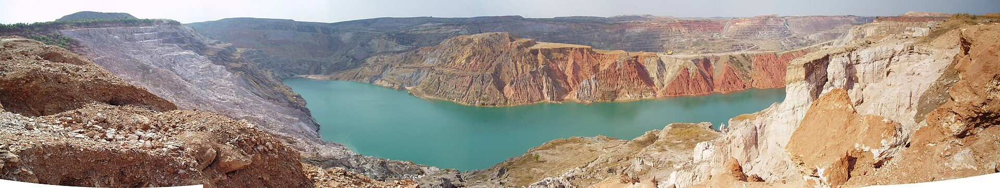
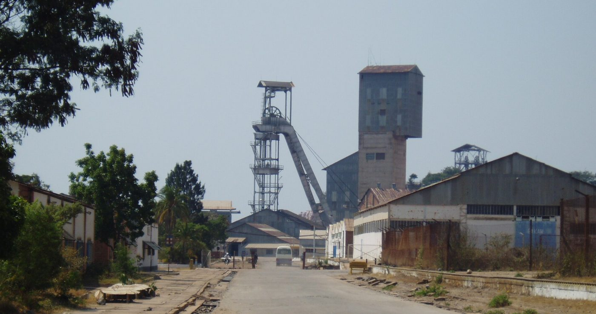
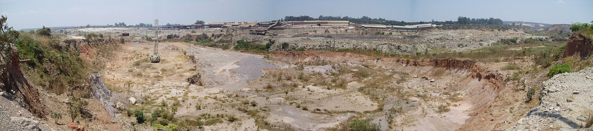
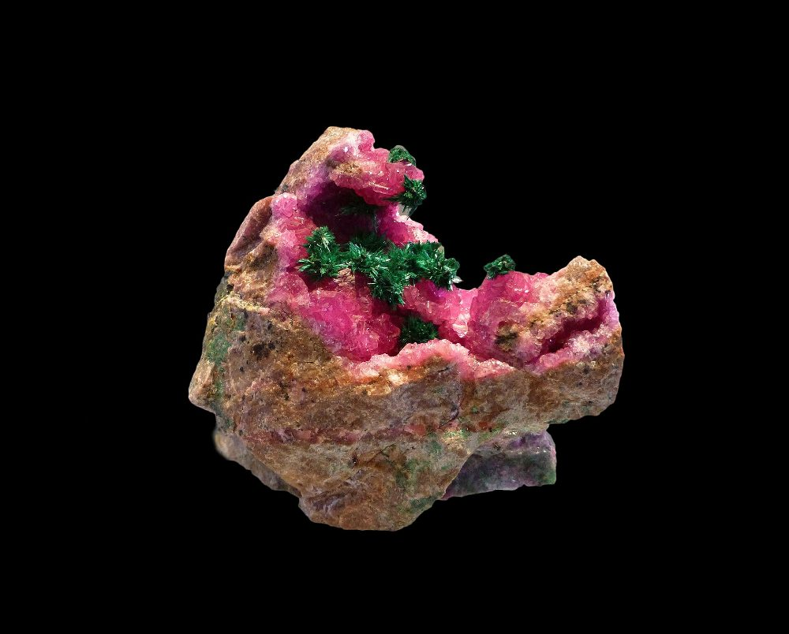

Kando Mine
Conventional drill-blast-load-haul mining of oxide copper-cobalt ore. 5.2 Mt of ore mined in 2025, strip ratio 3.1.

The Kando mine feeds the neighbouring plant, which produces grade A copper cathode and cobalt hydroxide. The Kanzenze South permit prepares what comes next.
Conventional drill-blast-load-haul mining of oxide copper-cobalt ore. 5.2 Mt of ore mined in 2025, strip ratio 3.1.

Milling, tank leach, solvent extraction and electrowinning: 65,000 t/yr of grade A copper cathode and 4,500 t/yr of contained cobalt as hydroxide.

18,000 m drilling campaign in 2025-2026 on a deposit extension. Maiden resource expected in the first half of 2027.
Illustrative figures, to be replaced with the company's data.

Our grade A copper cathodes (99.99%) travel by road to Dar es Salaam and Durban, then to refineries and cable makers in Asia and Europe. Copper is the metal of electrification: grids, motors, renewables.

Cobalt is recovered as hydroxide (30 to 35% Co) and sold to refiners under multi-year contracts. Every lot is traced from pit to container, with no artisanal input, in line with the OECD Due Diligence Guidance.
28 km north-west of Kolwezi, in Lualaba, in the heart of the Congolese Copperbelt.
Logistics and markets
Cathodes leave by truck for Dar es Salaam (2,300 km) and Durban (2,900 km), then by sea. We ship about 2,400 containers a year and work with licensed Congolese and Zambian hauliers. Cobalt hydroxide is sold under multi-year contracts to refiners who publish their own due diligence.
Energy
The site is powered by the national hydroelectric grid and by our 20 MWp solar plant, commissioned in 2022. The renewable share is 38%; the target is 60% in 2028 with a second solar phase and storage.

Solar plant, illustrative photo (Khi Solar One, South Africa).